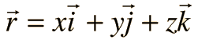

Any point P may be represented by three signed numbers, usually written (x, y, z) where the coordinate is the perpendicular distance from the plane formed by the other two axes.
Often positions are specified by a position vector r which can be expressed in terms of the coordinate values and associated unit vectors.

Although the entire coordinate system can be rotated, the relationship between the axes is fixed in what is called a right-handed coordinate system.
The distance between any two points in rectangular coordinates can be found from the distance relationship
|